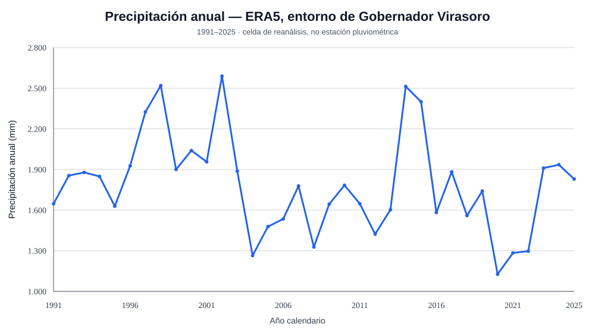

Series temporales
Precipitación anual, climatología mensual, selección de períodos y consulta de años individuales.
Un espacio interactivo para consultar la serie ERA5 del entorno de Virasoro, los registros departamentales de Santo Tomé y el catálogo de estaciones INTA-SIGA.
Precipitación anual, climatología mensual, selección de períodos y consulta de años individuales.
Exploración del catálogo, filtros por provincia y consulta de metadatos de cobertura.
Los conjuntos conservan su escala geográfica y procedencia. Las sumas exploratorias no se presentan como mediciones validadas.
Accedé al tablero con gráficos, controles temporales, mapa de estaciones y capas geográficas. La herramienta utiliza los archivos publicados dentro del laboratorio.
Abrir explorador interactivo ↗